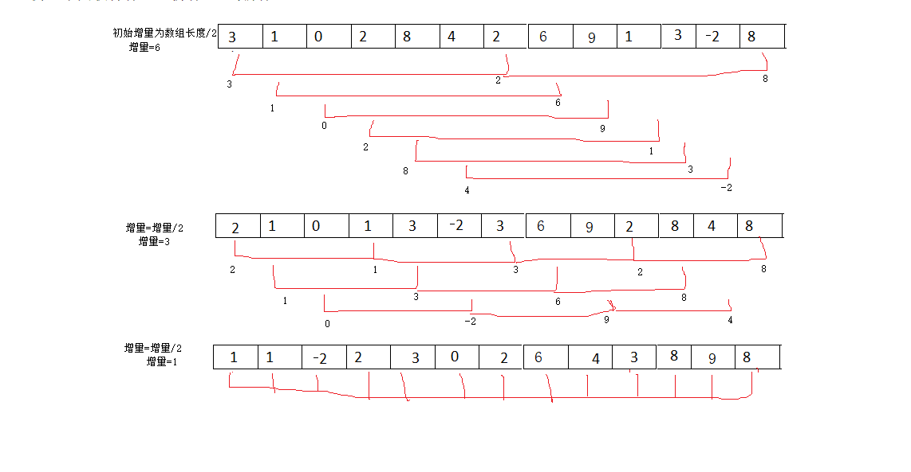

今天讲一下希尔排序，希尔排序呢，其实可以理解为插入算法排序的一个升级版了，不了解插入排序的小伙伴可以先看一下这篇文章：死磕算法之插入排序
我们知道，插入排序在进行排序时如果当数据量很大的时候，有一个很小的数据出现在了数组的最后，那么我们就要移动了这个数据前面所有的元素给它放置到合适的元素。例如：
我们要排序的数组为[1,2,3,4,5,6,7，。。。此处省略一百万。。.,0]。详细大家肯定不喜欢这个0往前移动一百万此吧。
希尔排序的出现其实就是为了解决这个问题的，希尔排序呢，使用了分治算法，先把整个大的数组根据某个增量分为若干个组，先对这若干个组进行一个调整，保证大部分小的数据会被调整到前面来。到最后再次进行插入排序，这样就大大加快了效率了。
来一个例子，我们要排序的数组为[3, 1, 0, 2, 8, 4, 2,6,9,1,3,-2,8],先来看一张图

上方图片所说的增量就是我们进行分组的依据了。我们在这里初始值取得是数组得2分之一（此值没有标准的定义，只需保证大于1且小于数组长度即可），而红线所指向得就是我们根据这个增量所分的组了，我们分别针对每组进行排序。
可以在增量为3的结果种看到，第一组3，2，8 变为了2，3，8、第二组第三组没变、第四组变为了1，2、第五组变为了3，8、第六组变为了-2，4.
接下来增量减半，我们的数组分为3组，分别进行排序。
现在增量值经过再次减半后已经变为1了，我们可以通过观察数组发现，在数组的后面基本不可能出现最小的数据了，现在对数组进行插入排序的效率已经非常高了。
不知道现在的你明白希尔排序了么？来看一看代码吧。
1 | void shellSort(int list[], int length){ |
希尔排序讲完了。在这里温馨提示大家，学习算法时，我们没必要拘泥于代码的实现，那没有意义。我的建议就是深入理解步骤，当你理解步骤以后代码是随你怎么玩都可以的。